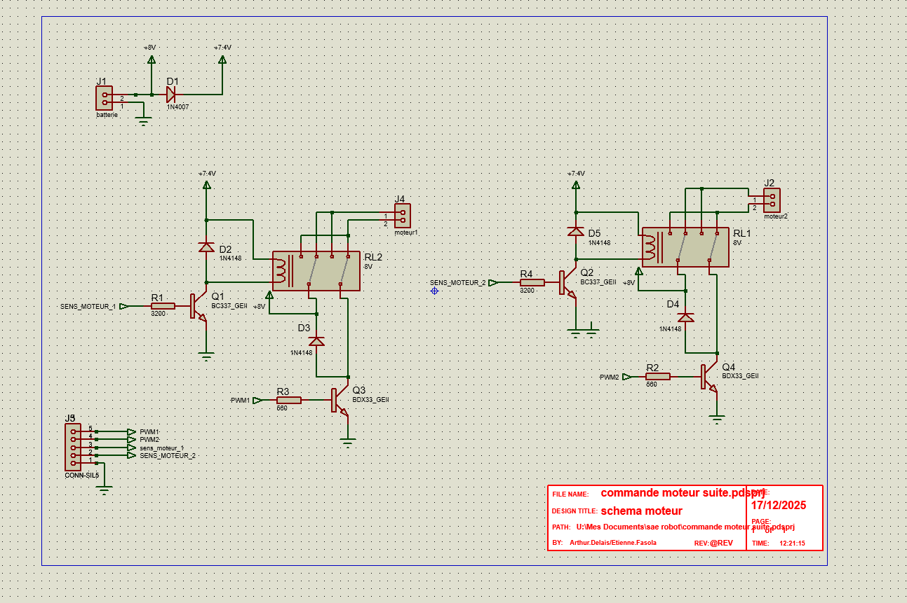

Produire une analyse fonctionnelle d'un système simple
C'est quoi en fait ?
L'analyse fonctionnelle consiste à décomposer un système en blocs fonctionnels, à identifier le rôle de chaque composant et à comprendre les interactions entre les sous-ensembles. Cette démarche est le point de départ de toute conception en GEII.
Comment je l'ai pratiquée
SEA Robot · Carte de commande moteur
Pour la SAÉ Robot, j'ai analysé la fonction « commande de deux moteurs à courant continu » à partir du cahier des charges fourni. Cette analyse m'a permis d'identifier les blocs nécessaires : alimentation (batterie 8 V protégée par diode 1N4007), commande logique (signaux PWM et SENS depuis le microcontrôleur), étage de puissance (transistors BC337 en pré-amplification, BDX33 en Darlington pour la commutation forte), inversion du sens de rotation (relais 8 V), et protection (diodes de roue libre 1N4148 sur les bobines).
J'ai compris pourquoi chaque composant est là : le transistor sert à la fois d'interrupteur commandé et d'élément d'adaptation de courant, le relais permet d'inverser la polarité du moteur sans avoir recours à un pont en H complet en composants discrets, et la diode 1N4148 protège l'étage de commande contre la surtension générée par la bobine du relais à la coupure.
SEA Info · Modélisation balistique
Pour la SAÉ Info (simulateur d'interception balistique), nous avons (Samuel Nouis et moi) commencé par l'analyse du problème : entrées (positions, vitesses, angles initiaux), sortie (angle de tir de l'intercepteur), hypothèses physiques (points matériels, frottements négligés, champ de pesanteur uniforme). Cette analyse a structuré toute la modélisation et le code C++ qui a suivi.
Mes preuves

Où j'en suis
Pour moi c'est MS (maîtrise satisfaisante). J'arrive à découper un système en blocs, à dire à quoi sert chaque composant et pourquoi il est là. Ce que je dois encore travailler, c'est la mise en forme graphique propre (SADT, FAST) — je le fais souvent "à la main" sans suivre une vraie norme.